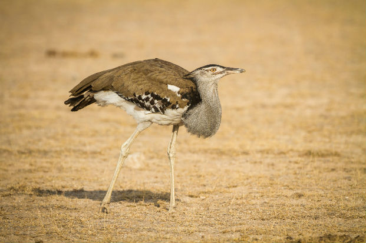

Ardeotis kori
Male Kori Bustards are the heaviest flying birds on the planet. They often walk near the other animals such as zebras, antelope and wildebeest to gather food. They are diurnal (active during the day) and are omnivores eating mainly grass and other plants but occasionally small invertebrates.